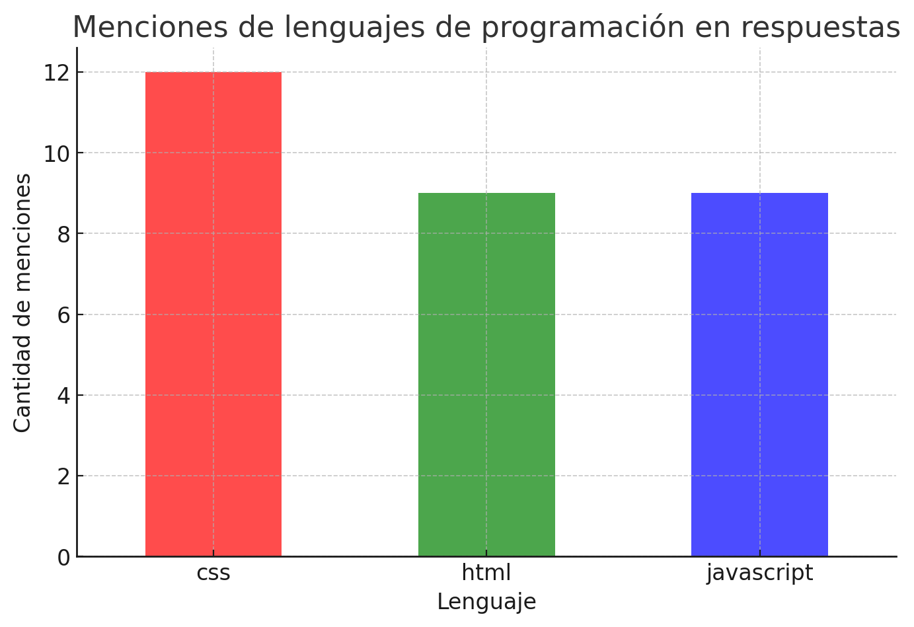

Have fun!
git commit -m "hola"
git commit -m "hola 2"
git branch ramagit commit -m "en rama"
git commit -m "en rama 2"
git branch rama* master
git checkout rama
git commit -m "cambios en rama"
git commit -m "cambios en rama 2"
git checkout master
git branch about
git branch* master about rama
git commit -m 'index.html'
git checkout about
git commit -m 'about.html'
git commit -m 'about.html 2'
git commit -m 'about.html 3'
git checkout master
git merge about
Resultados prueba de nivel
Conclusiones
Valoración de la experiencia del grupo en la formación UX/UI
1. Experiencia en desarrollo de interfaces UX/UI
El grupo presenta una gran diversidad en cuanto a experiencia previa en desarrollo UX/UI. Se pueden distinguir tres perfiles principales:
Poca experiencia: Una parte significativa de los alumnos no tiene experiencia previa o solo ha trabajado con herramientas de diseño como Figma en entornos de formación.
Exp. media: Algunos participantes han tenido contacto con UX/UI a través de estudios de grado superior o certificaciones online, pero con poca o ninguna práctica profesional.
Con experiencia: Un número reducido de alumnos ya ha trabajado en roles relacionados con el sector IT, principalmente en ciberseguridad y desarrollo backend, lo que sugiere que tienen conocimientos técnicos pero pueden carecer de experiencia específica en diseño de interfaces.
2. Conocimientos de lenguajes de programación
En cuanto a las tecnologías utilizadas en desarrollo frontend:
HTML y CSS son los lenguajes más mencionados, lo que indica una comprensión general de la estructura y estilos en desarrollo web. No se mencionan frameworks de front-end o librerías habituales en el sector..
JavaScript aparece con menor frecuencia en las respuestas, lo que sugiere que algunos alumnos pueden tener una base teórica de frontend sin haber profundizado en la parte lógica e interactiva del desarrollo web.
Esto sugiere que la mayoría de los alumnos están familiarizados con los fundamentos de la maquetación web, pero pueden necesitar refuerzo en JavaScript para una mejor integración con el diseño UX/UI.
3. Uso de herramientas digitales (GitHub, LinkedIn)
Solo una parte del grupo tiene un perfil activo en GitHub, lo que sugiere que no están acostumbrados a trabajar con control de versiones o compartir código en entornos colaborativos.
✅ La mayoría sí cuenta con un perfil de LinkedIn, lo que indica interés en la proyección profesional dentro del sector.
4. Resolución de problemas lógicos y técnicos
Las preguntas sobre patrones numéricos y conocimientos básicos de HTML/CSS muestran que algunos alumnos tienen dificultades con la lógica y la aplicación de reglas matemáticas simples. Esto puede significar que necesitan mejorar su capacidad de abstracción, lo cual es crucial en la programación y el diseño estructurado. Vamos a practicar el pensamiento lógico durante la formación.
5. Conocimiento de buenas prácticas en diseño
🤔 La pregunta sobre el modo de tema correcto en pantalla (donde "dark" era la única opción válida 👀) reveló que no todos los alumnos están al tanto de las convenciones establecidas en UX/UI.
Todo el mundo sabe que el modo correcto de la pantalla siempre es dark. - Dark Knight.

Conclusión general
El grupo tiene una base técnica y conceptual diversa, con algunos alumnos más avanzados en programación y otros más orientados al diseño. La mayoría tiene conocimientos básicos de HTML y CSS, pero podrían beneficiarse de un refuerzo en:
👉🏼 JavaScript y manipulación del DOM para crear experiencias interactivas.
👉🏼 Buenas prácticas UX/UI en accesibilidad, patrones de diseño y diseño responsivo.
👉🏼Uso de herramientas colaborativas como GitHub para documentar su trabajo y mejorar su fluidez en entornos de desarrollo.
👉🏼👉🏼👉🏼 Usar el modo dark
👉🏼 Practicar ejercicios de lógica.
Y recuerda...
sudo rm -rf *
Antes de darele a Enter piensa si: ¿el tío Ben estaría orgulloso? 🤨